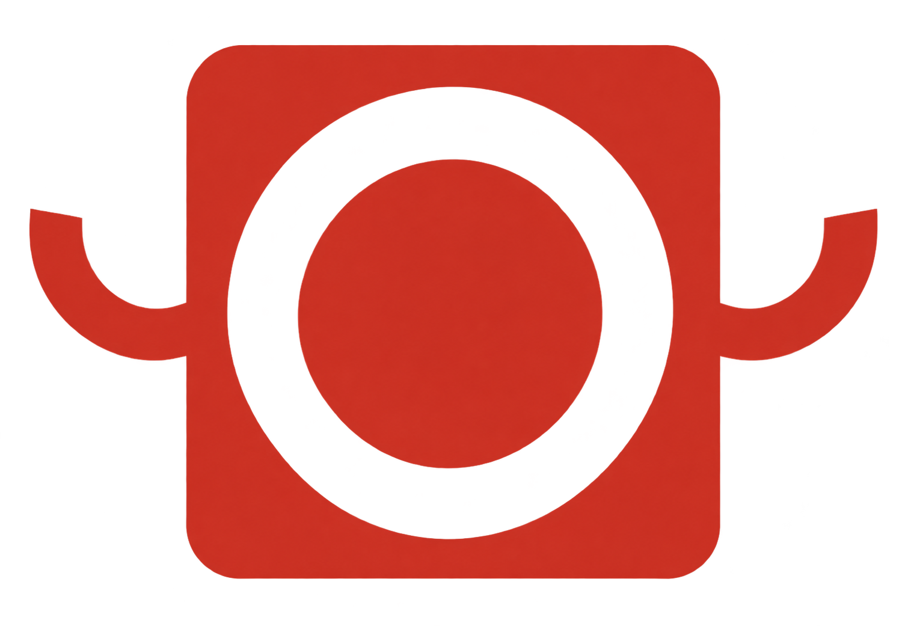
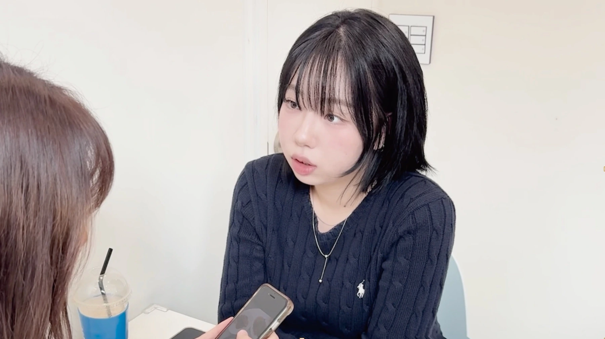
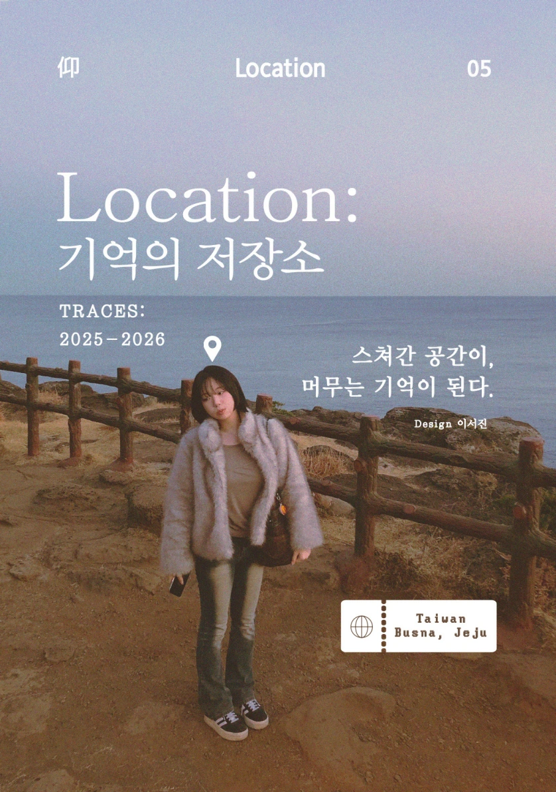

SCENE 01 / SELECTED WORKNOVEL · WRITING & COVER DESIGN
Scene 01.
이야기의 기획부터
시각적 완성까지.
미스터리·스릴러 장르의 전자책 소설. 시장조사와 페르소나 설정을 바탕으로 집필과 표지 디자인에 참여했습니다.
- PROJECT
- 묵인
- MY ROLE
- Writing / Cover Design

기획을 이해하고, 감각으로 표현하는 제작자.
이서진의 영상 & 콘텐츠 포트폴리오


AaSTORY NOTESSEE IT.미디어출판학과에서 기획과 편집, 출판 콘텐츠 제작을 경험하며 하나의 콘텐츠가 완성되기까지 다양한 선택이 필요하다는 것을 배웠습니다.
독자를 분석하고, 이야기를 구성하고, 시각적 표현을 고민했던 경험을 바탕으로 콘텐츠의 기획 의도와 이미지가 자연스럽게 연결되는 영상을 만들고자 합니다.
CONTENT PLANNING · EDITORIAL · VIDEO
글에서 지면으로, 지면에서 화면으로.
이야기를 전하는 세 가지 방식.
미스터리·스릴러 장르의 전자책 소설. 시장조사와 페르소나 설정을 바탕으로 집필과 표지 디자인에 참여했습니다.
하나의 주제를 글과 이미지로 엮은 팀 잡지 프로젝트. 주제에 어울리는 이미지와 편집 방향을 고민하고 지면을 구성했습니다.
단편영화의 주인공으로 출연하고 편집에 참여했습니다. 장면의 흐름과 소리로 감정과 메시지를 전달하는 방식을 탐구했습니다.
기획부터 촬영, 편집 그리고 완성까지.
온라인 전시에서 작업의 이야기를 만나보세요.
누구에게, 무엇을 전할지
대상과 목적을 살핍니다.
자료를 분석하고
이야기의 흐름을 설계합니다.
글과 이미지, 영상으로
기획의 의도를 구체화합니다.